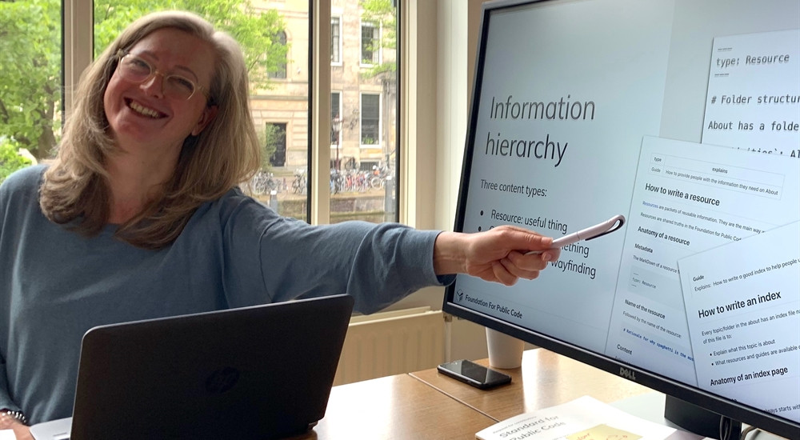

Making sure the code, tests and documentation are always up to the standards
We check every merge request on code, policy and documentation quality in our codebase auditing process. This enables agile development for trustworthy codebases for public organizations and their collaborators.
"The codebase stewards helped us in a great way to shift to maintaining our platform code fully in the open. We had two sessions with the stewards, enabling the team to determine the work to be done, then actually making the step to working fully in the open. We now work with more than one team on the codebase on Gitlab."
— Martin Dias d'Ullois - Product Owner, Logius